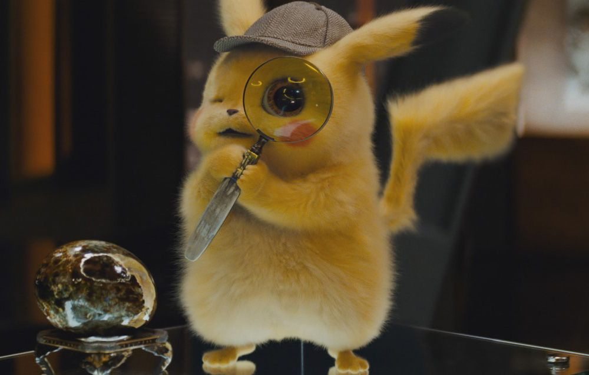
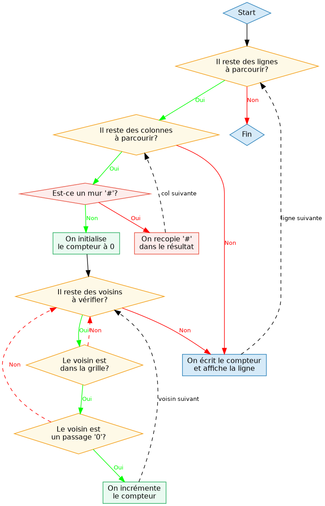
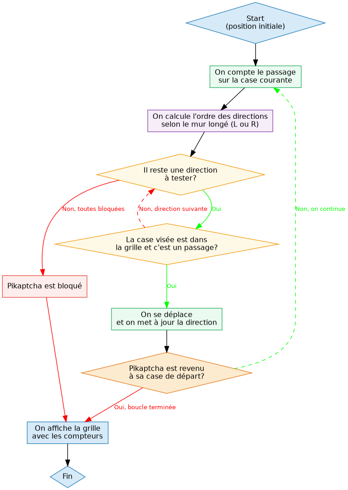

Rapport - Detective Pikaptcha EP1 & EP2
Table des matières

Figure 1 : Image extraite du film « Détective Pikachu »
1. Introduction
Le détective Pikaptcha se retrouve piegé dans un labyrinthe déformé par un poké-bot. Pour s’en sortir, il doit cartographier son environnement.
Ces deux puzzles CodingGame travaillent sur une grille 2D faite de passages (0) et de murs (#) :
- EP1 : pour chaque case passage, compter le nombre de passages voisins adjacents (4 directions).
- EP2 : simuler le deplacement de Pikaptcha qui suit un mur (gauche ou droite) et compter le nombre de passages sur chaque case jusqu’au retour au point de départ.
2. EP1 - Passages adjacents
2.1. Démarche
En lisant l’énoncé, la logique est assez directe : chaque case passage doit afficher combien de ses voisins direct sont aussi des passages. La première idée qui vient, c’est de parcourir toute la grille case par case, et pour chaque case passage, de regarder ses 4 voisins (haut, bas, gauche, droite).
Le seul piège, c’est les bords de la grille,car un voisin peut ne pas exister si on est sur une bordure ou dans un coin. La solution, c’est de vérifier d’abord que les coordonnées du voisin sont valides avant d’essayer d’y accéder.
2.2. Algorithme de résolution
Entrée : une grille h × w de caractères ('0' ou '#')
Sortie : la même grille où chaque '0' est remplacé par le nombre de passages adjacents

2.3. Code commenté
import sys largeur, hauteur = [int(i) for i in input().split()] # Dimensions de la grille grille = [] for i in range(hauteur): grille.append(input()) # On stocke chaque ligne comme une chaîne for ligne in range(hauteur): resultat = "" # Chaîne de sortie reconstruite à chaque ligne for col in range(largeur): if grille[ligne][col] == '#': resultat += '#' # Mur : recopié tel quel else: compteur = 0 # Nombre de voisins passage autour de cette case for delta_ligne, delta_col in [(-1, 0), (1, 0), (0, -1), (0, 1)]: # Haut, bas, gauche, droite voisin_ligne = ligne + delta_ligne voisin_col = col + delta_col if 0 <= voisin_ligne < hauteur and 0 <= voisin_col < largeur: # Vérif bornes avant accès if grille[voisin_ligne][voisin_col] == '0': compteur += 1 # Le voisin est un passage, on le compte resultat += str(compteur) # str() obligatoire : on concatène dans une chaîne print(resultat) # On affiche la ligne une fois tous les cols traités
2.4. Résultats
Pour l’entrée suivante :
5 3 >000# #0#00 00#0#
Sortie attendue :
1322# #2#31 12#1#
3. EP2 - Wall-following
3.1. Démarche
Ici c’est plus compliqué car Pikaptcha se déplace en suivant un mur, et il faut compter combien de fois il passe sur chaque case.
L’idée , c’est que Pikaptcha a toujours une direction de marche, et a chaque étapes il essaie en priorité de coller au mur (tourner vers lui), puis d’aller tout droit, puis de s’en éloigner, et si il n’y a plus d’autre options de faire demi-tour. C’est cet ordre de priorité qui définit tout le comportement.
Pour représenter les directions, on les numérote en ordre horaire (0=Haut, 1=Droite, 2=Bas, 3=Gauche) : comme ça, tourner à droite = +1 mod 4, tourner à gauche = -1 mod 4 (ça évite beaucoup de if/else/). Pour les compteurs, on maintient un tableau séparé et on incrémente la case courante avant de bouger, pour bien compter la case de départ dès le premier passage. La condition d’arrêt, c’est de revenir à la case de départ, mais on la vérifie après le déplacement pour ne pas s’arrêter immédiatement au lancement.
3.2. Algorithme de résolution
Entrée : une grille h × w, la position/direction initiales de Pikaptcha, le mur suivi (L ou R)
Sortie : la grille où chaque passage indique le nombre de fois que Pikaptcha l’a traversé

3.3. Code commenté
import sys width, height = [int(i) for i in input().split()] # Dimensions de la grille # Directions en ordre horaire : Haut=0, Droite=1, Bas=2, Gauche=3 dy = [-1, 0, 1, 0] dx = [0, 1, 0, -1] dir_map = {'^': 0, '>': 1, 'v': 2, '<': 3} # Conversion caractère → indice grille = [] start_x, start_y, start_dir = 0, 0, 0 for y in range(height): line = list(input()) # Liste de caractères pour pouvoir modifier les cases grille.append(line) for x in range(width): if line[x] in dir_map: start_x, start_y = x, y # Position de départ mémorisée start_dir = dir_map[line[x]] # Direction de départ convertie en indice grille[y][x] = '0' # On remplace le symbole par un passage normal side = input().strip() # Mur à longer : 'L' ou 'R' compteur = [[0] * width for _ in range(height)] # Nombre de passages par case, initialisé à 0 x, y, d = start_x, start_y, start_dir # True si on longe le mur droit (sens horaire), False pour le mur gauche horaire = (side == 'R') while True: # On calcule l'ordre de priorité des 4 directions selon le mur longé # L'idée : toujours essayer de coller au mur en premier, demi-tour en dernier recours if horaire: vers_mur = (d + 1) % 4 # Tourner vers le mur droit tout_droit = d # Continuer dans la même direction autre_cote = (d - 1) % 4 # S'éloigner du mur demi_tour = (d + 2) % 4 # Faire demi-tour else: vers_mur = (d - 1) % 4 # Tourner vers le mur gauche tout_droit = d autre_cote = (d + 1) % 4 demi_tour = (d + 2) % 4 ordre = [vers_mur, tout_droit, autre_cote, demi_tour] bouge = False for next_dir in ordre: nx = x + dx[next_dir] ny = y + dy[next_dir] dans_grille = 0 <= nx < width and 0 <= ny < height # Vérif bornes avant accès if dans_grille and grille[ny][nx] == '0': # Case franchissable x, y, d = nx, ny, next_dir # On se déplace et on met à jour la direction compteur[y][x] += 1 # On compte le passage sur la nouvelle case bouge = True break # Première direction valide trouvée, on arrête if not bouge: # Pikaptcha est bloqué, on sort break if (x, y) == (start_x, start_y): # Retour au point de départ, boucle terminée break for y in range(height): ligne = "" for x in range(width): ligne += '#' if grille[y][x] == '#' else str(compteur[y][x]) print(ligne)
3.4. Résultats
Pour l’entrée suivante :
5 3 >000# #0#00 00#0# L
Sortie attendue :
1322# #2#31 12#1#
Pikaptcha part en > en (0,0) et suit le mur gauche. Les cases les plus fréquentées sont celles aux intersections ou dans les couloirs étroits où le chemin repasse plusieurs fois.
4. Solution alternative - EP2
Voir la solution de iAmMortos sur CodingGame
class Pikaptcha(object): def __init__(self, width, height, maze, side): self.width = width self.height = height self.maze = maze self.side = side self.curpos = (None, None) self.startingpos = (None, None) self.facingidx = None self.sideval = 1 if self.side == 'R' else -1 self.directions = ['L', 'U', 'R', 'D'] self.dirchars = ['<', '^', '>', 'v'] self.numdirs = 4 for y, line in enumerate(self.maze): for x, c in enumerate(line): if c in self.dirchars: self.curpos = (x, y) self.startingpos = (x, y) self.facingidx = self.dirchars.index(c) self.maze[y][x] = 0 elif c == '#': self.maze[y][x] = -1 else: self.maze[y][x] = int(c) def run(self): self.step() while self.curpos != self.startingpos: self.step() def step(self): if self.can_turn_move: self.turn(); self.move_forward() elif self.can_move_forward: self.move_forward() elif self.can_turn_away_move: self.turn_away(); self.move_forward() elif self.can_move_back: self.turn_back(); self.move_forward() def move_forward(self): self.curpos = self.get_forward_coords() x, y = self.curpos self.maze[y][x] += 1 def get_coords_in_dir(self, d): x, y = self.curpos return (x - 1 if d == 'L' else x + 1 if d == 'R' else x, y - 1 if d == 'U' else y + 1 if d == 'D' else y) def get_forward_coords(self): return self.get_coords_in_dir(self.facing) def turn(self): self.facingidx = (self.facingidx + self.sideval) % self.numdirs def turn_away(self): self.facingidx = (self.facingidx - self.sideval) % self.numdirs def turn_back(self): self.facingidx = (self.facingidx + 2) % self.numdirs def can_move(self, direction): x, y = self.get_coords_in_dir(direction) if 0 <= x < self.width and 0 <= y < self.height: return self.maze[y][x] >= 0 return False @property def can_move_forward(self): return self.can_move(self.facing) @property def can_move_back(self): return self.can_move(self.backdir) @property def can_turn_move(self): return self.can_move(self.turndir) @property def can_turn_away_move(self): return self.can_move(self.turnawaydir) @property def facing(self): return self.directions[self.facingidx] @property def backdir(self): return self.directions[(self.facingidx + 2) % self.numdirs] @property def turndir(self): return self.directions[(self.facingidx + self.sideval) % self.numdirs] @property def turnawaydir(self):return self.directions[(self.facingidx - self.sideval) % self.numdirs] def __repr__(self): s = '' for line in self.maze: for c in line: s += '#' if c < 0 else str(c) s += '\n' return s.strip() def main(): width, height = [int(i) for i in input().split()] maze = [list(input()) for _ in range(height)] side = input() pika = Pikaptcha(width, height, maze, side) pika.run() print(pika) if __name__ == '__main__': main()
Cette solution interprete Pikaptcha comme un objet.
La différence principale avec ma version est dans la structure,. Ici, chaque responsabilité est isolée dans une méthode dédiée (turn, move_forward, can_move=…), ce qui rend le code plus lisible. Deux détails techniques intéressant : la grille est convertie en entiers dès l'init (murs = =-1, passages ≥ 0), ce qui évite de maintenir un tableau de compteurs séparé. Et sideval (+1 ou -1) unifie les deux modes de rotation en un seul calcul.
Côté Python pur, les @property que je ne connaissais pas permettent d’appeler can_turn_move comme un attribut sans parenthèses, ce qui rend le step() très lisible.
5. Bilan
L’EP1 était assez simple, la logique de voisinage sur grille était déjà vue. L’EP2 était plus intéressant et compliqué : comprendre l’ordre de priorité des directions a demandé de bien visualiser le comportement de Pikaptcha pas à pas. Le bug le plus fréquent était une boucle infinie, souvent due à une mauvaise condition d’arrêt.
Côté Python, j’ai pu améliorer ma maîtrise des listes, et la solution alternative m’a fait découvrir les @property. Pas de nouvelles notions algorithmiques majeures, hormis l’Algorithme du WallFollowing.